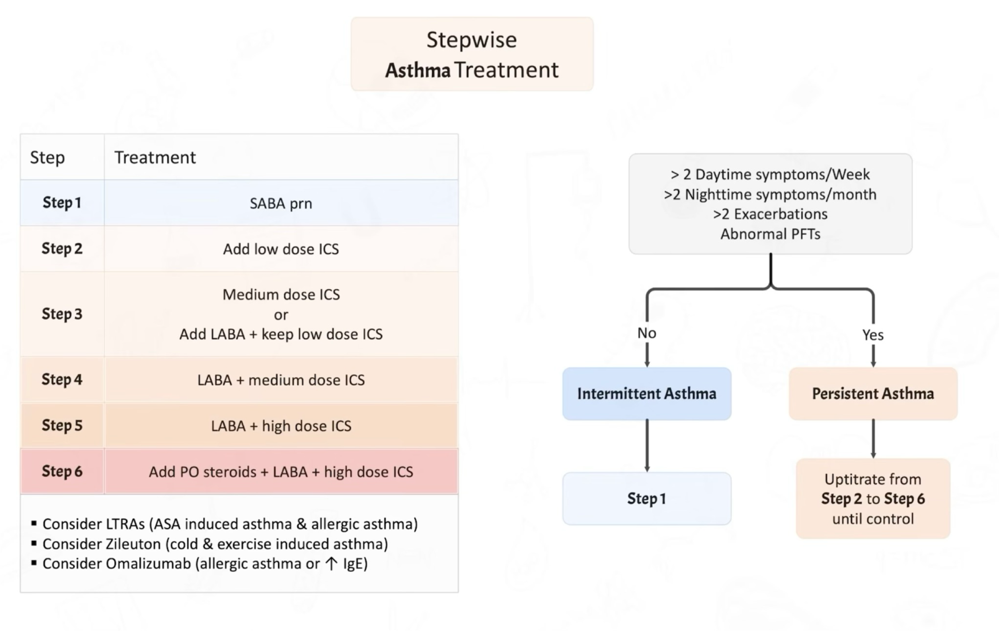
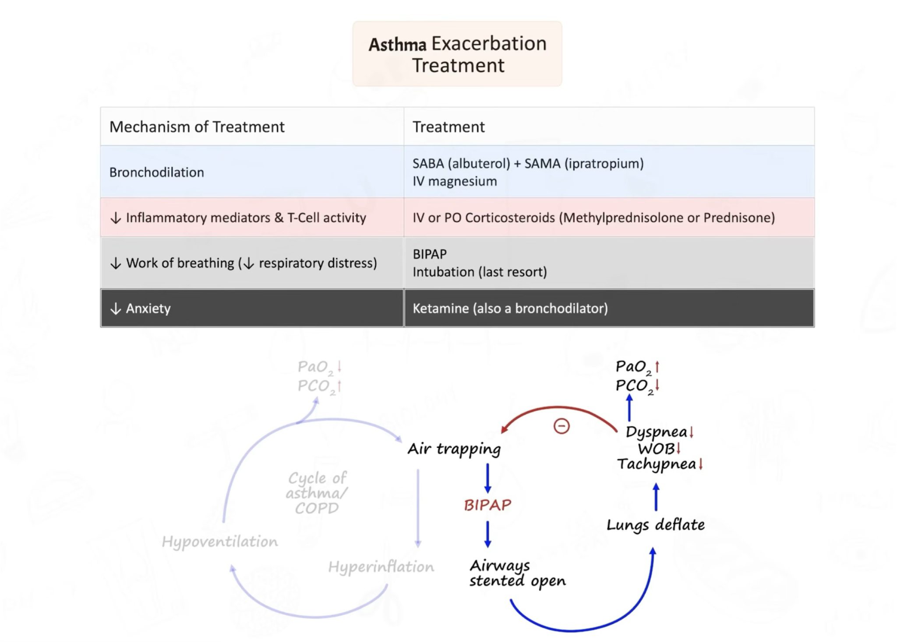
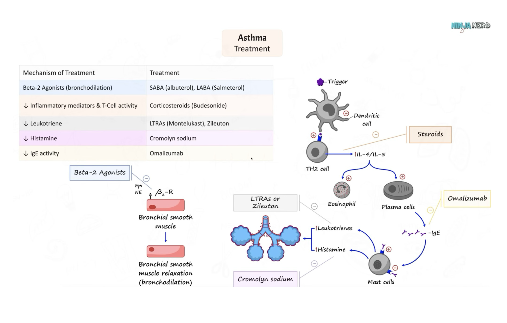
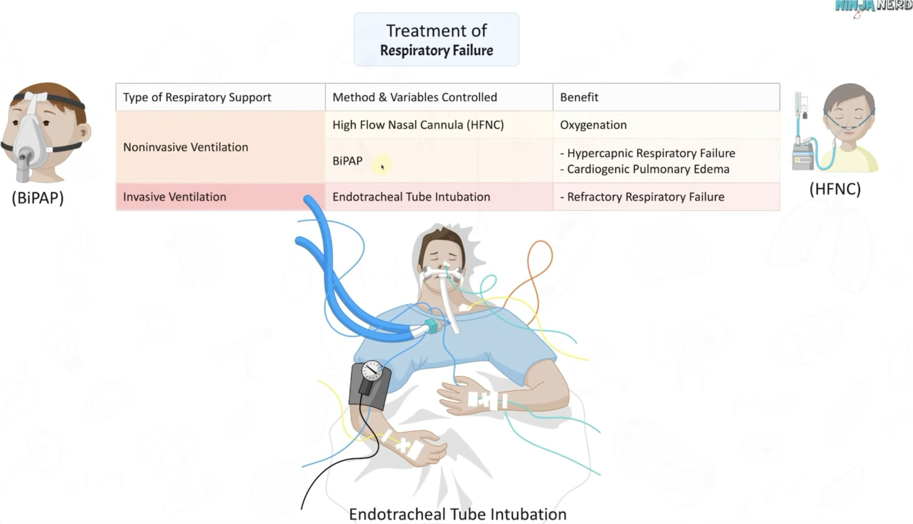
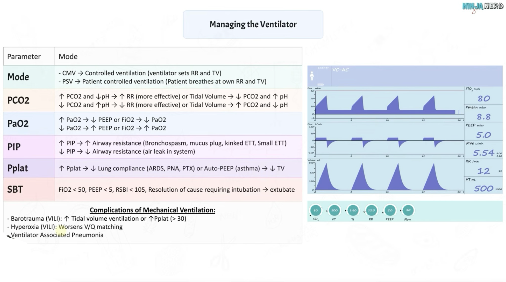
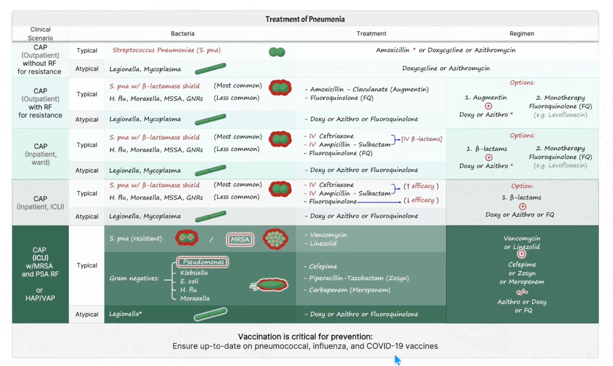
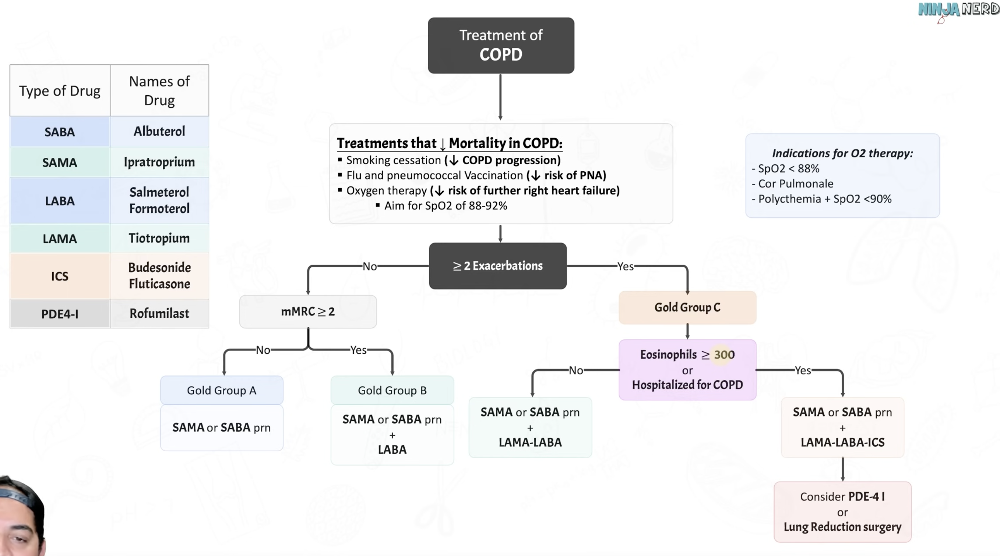
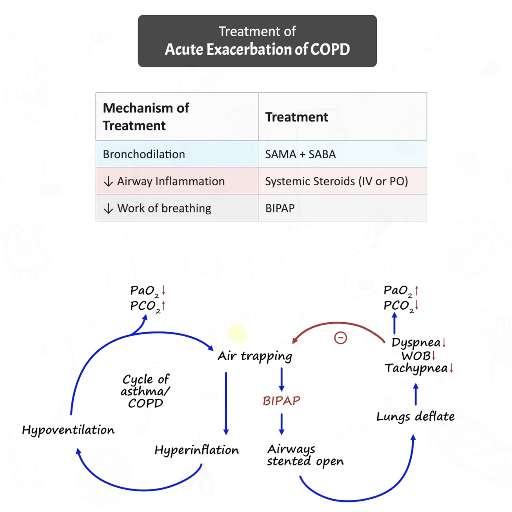
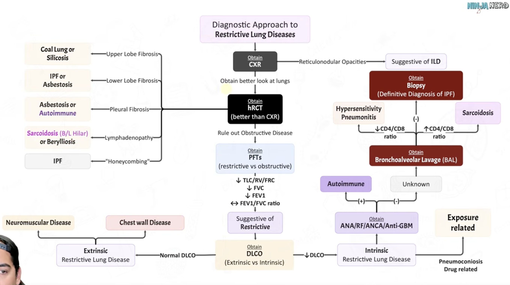
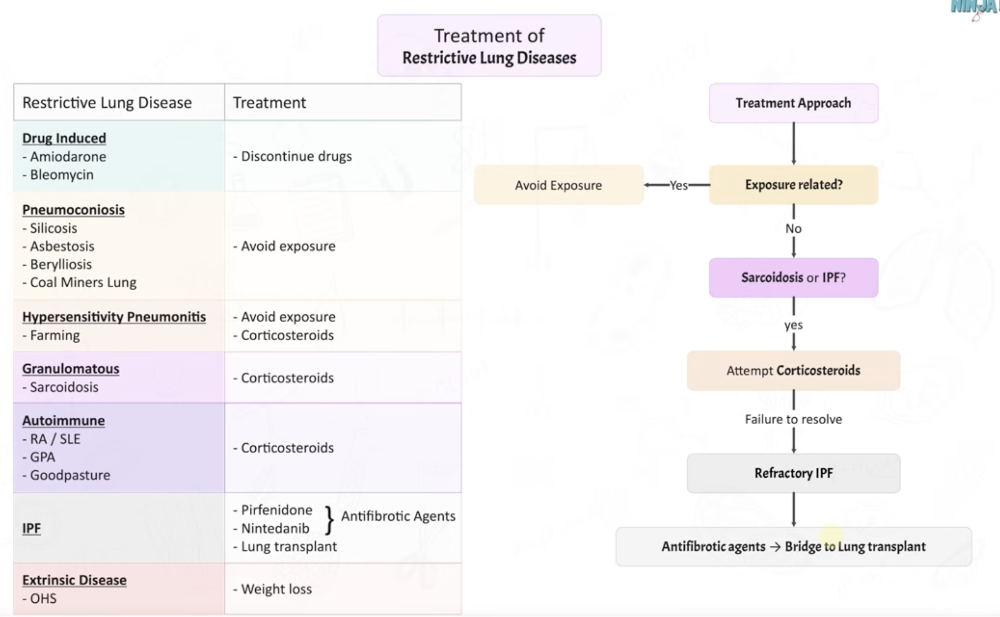

MF1 Respirology; Clinical Medicine
Use the menu options at the top to navigate, I haven't added all the back buttons yet
ADDED: URTI, asthma, resp failure, pneumonia, PFTs, COPD
TO DO: Interstitial lung disease, ARDS
SPECIAL THANKS TO:
1. Zach/Ninja Nerd (sorry Angus)
2. Jackie (for figuring out venous admixture with me at 12am)
3. The rest of the late night WRC crew











